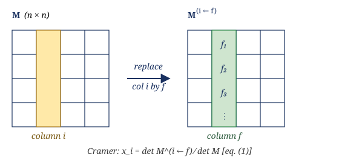
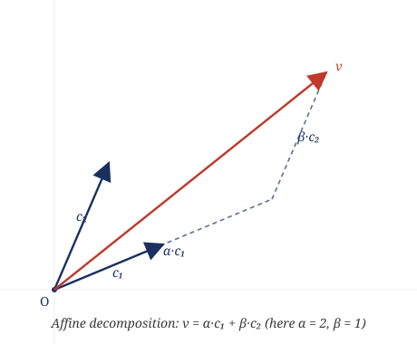
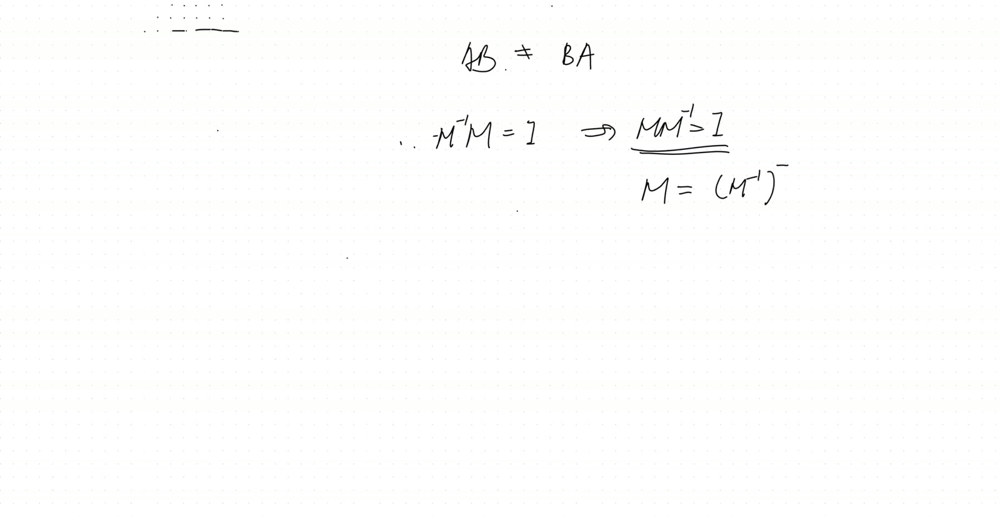
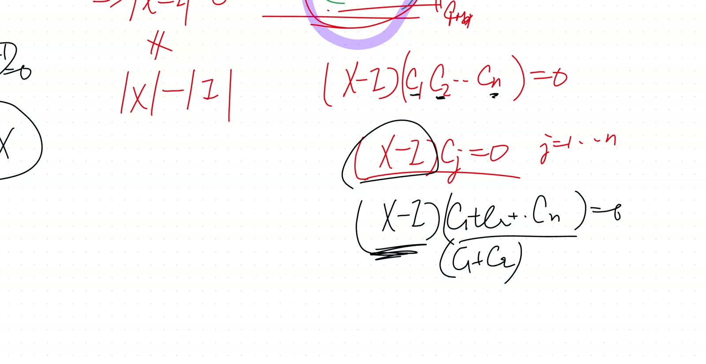
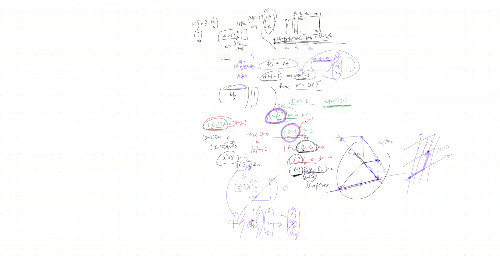
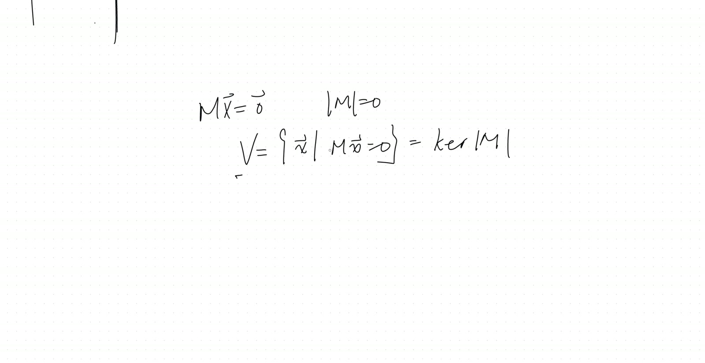

flowchart TB
A["Cofactor formula<br/>M⁻¹ = adj(M)/det(M)<br/><i>(imported)</i>"] --> B["Cramer's rule<br/>eq. (1)–(2)<br/>Theorem 1"]
A --> C["M⁻¹M = I<br/><i>(imported)</i>"]
C --> D["(X − I)M = 0<br/>eq. (3)"]
D --> E["(X − I)c_j = 0 ∀j<br/>eq. (4)"]
F["det M ≠ 0 ⇒<br/>columns linearly independent<br/><i>(imported geometric)</i>"] --> G["Span argument<br/>eq. (5)"]
E --> G
G --> H["X − I = 0<br/>MM⁻¹ = I<br/>Theorem 2 (Derivation A)"]
C --> I["det(M)·det(M⁻¹)=1<br/><i>via det(AB)=det A · det B</i>"]
I --> J["M is bijective<br/>(rank-nullity)<br/><i>(imported)</i>"]
J --> K["Unique two-sided inverse<br/>eq. (6)<br/>Theorem 2 (Derivation B)"]
L["Linearity of matrix multiplication"] --> M["M(αx₁+βx₂)=αMx₁+βMx₂<br/>eq. (7)"]
M --> N["ker M closed under<br/>linear combinations<br/>Theorem 3"]
Cramer’s Rule, Two-Sided Inverse, and Linear Vector Spaces
Lead
The session proves Cramer’s rule from the cofactor formula for \(M^{-1}\), then uses it together with a column-space argument to establish that left and right inverses of a square matrix coincide: if \(M^{-1}M=I\) then \(MM^{-1}=I\). The proof technique — upgrading “the matrix \(A\) vanishes on each of \(n\) linearly independent vectors” to “\(A=0\)” — generalises and recurs throughout the course. The lesson closes by defining a linear vector space as a set closed under linear combination, and proves that \(\ker M\) is one. The analogous claim for \(\operatorname{range}(M)\) is left as homework.
Symbol dictionary
| Symbol | Meaning |
|---|---|
| \(M \in \mathbb{R}^{n\times n}\) | square real coefficient matrix; assumed invertible unless stated otherwise |
| \(m_{ij}\) | scalar entry of \(M\) in row \(i\), column \(j\) |
| \(\widetilde{M}_{ij}\) | \((n-1)\times(n-1)\) submatrix obtained by deleting row \(i\) and column \(j\) |
| \(C_{ij} := (-1)^{i+j}\det\widetilde{M}_{ij}\) | cofactor of entry \(m_{ij}\) (the transcript writes “\(M_{ji}\)” for this; we use \(C_{ij}\) to avoid index collision with the matrix itself) |
| \(\operatorname{adj}(M)\) | adjugate: \([\operatorname{adj}(M)]_{ij}=C_{ji}\) (transpose of the cofactor matrix) |
| \(\det M\) | determinant of \(M\) |
| \(\mathbf{x},\mathbf{f}\in\mathbb{R}^n\) | unknown / RHS vectors of the linear system \(M\mathbf{x}=\mathbf{f}\) |
| \(M^{(i\leftarrow \mathbf{f})}\) | \(M\) with its \(i\)-th column replaced by \(\mathbf{f}\) |
| \(I\) | \(n\times n\) identity |
| \(\mathbf{e}_j\) | \(j\)-th standard basis vector of \(\mathbb{R}^n\) |
| \(\ker M := \{\mathbf{x}\in\mathbb{R}^n : M\mathbf{x}=\mathbf{0}\}\) | kernel / null space |
| \(V_n\) | a linear vector space of dimension \(n\) over \(\mathbb{R}\) |
Primitive notions and assumptions
- Field is \(\mathbb{R}\). Statements transfer to \(\mathbb{C}\) without modification; finite fields require care (not in scope).
- \(n\in\mathbb{N}_{\ge 1}\), finite.
- The cofactor formula \(M^{-1}=\dfrac{1}{\det M}\operatorname{adj}(M)\) was proved in a prior session and is imported.
- The multiplicative law \(\det(AB)=\det(A)\det(B)\) is imported (the teacher flags this explicitly during the session — proof deferred to a later lecture).
NotePrerequisites
- Cofactor expansion of \(\det M\) along an arbitrary row/column.
- Right-inverse identity \(M^{-1}M=I\) — established earlier via \(M^{-1} = \operatorname{adj}(M)/\det M\).
- Linear independence of \(n\) vectors in \(\mathbb{R}^n\) via the geometric/volume picture.
Topics covered
- Cramer’s rule and its proof from the adjugate formula
- Equivalence of left and right inverses for square matrices
- The column-upgrade trick: \(A\mathbf{c}_j = \mathbf{0}\) for \(j=1,\dots,n\) with \(\{\mathbf{c}_j\}\) linearly independent \(\;\Rightarrow\;\) \(A = 0\)
- Formal definition of a linear vector space (closure under linear combination)
- Proof that \(\ker M\) is a linear vector space
- The trivial 0-dimensional vector space \(\{\mathbf{0}\}\)
Theorems
(Cramer’s rule). Let \(M\in\mathbb{R}^{n\times n}\) with \(\det M\ne 0\) and \(\mathbf{f}\in\mathbb{R}^n\). The unique solution of \(M\mathbf{x}=\mathbf{f}\) has components
\[ x_i \;=\; \frac{\det M^{(i\leftarrow \mathbf{f})}}{\det M},\qquad i=1,\dots,n. \tag{1} \]
(Two-sided inverse). If \(M\in\mathbb{R}^{n\times n}\) has \(M^{-1}M=I\), then \(MM^{-1}=I\).
(Kernel is a subspace). For any \(M\in\mathbb{R}^{n\times n}\), the set \(\ker M\) is a linear subspace of \(\mathbb{R}^n\).
Derivation of Theorem 1 (Cramer’s rule)
From the imported adjugate formula \(M^{-1}=\dfrac{1}{\det M}\operatorname{adj}(M)\) and \(\mathbf{x}=M^{-1}\mathbf{f}\),
\[ x_i \;=\; \frac{1}{\det M}\sum_{j=1}^{n}[\operatorname{adj}(M)]_{ij}\,f_j \;=\; \frac{1}{\det M}\sum_{j=1}^{n}C_{ji}\,f_j. \tag{2} \]
The sum \(\sum_j C_{ji}\,f_j\) is, by definition, the cofactor expansion along the \(i\)-th column of the matrix obtained from \(M\) by replacing its \(i\)-th column with \(\mathbf{f}\). That matrix is exactly \(M^{(i\leftarrow \mathbf{f})}\); its column-\(i\) entries are \(f_1,\dots,f_n\) and its cofactors along that column are the \(C_{ji}\) of the original \(M\) (since deleting column \(i\) removes the replaced column entirely, so the remaining submatrix is unchanged). Therefore \(\sum_j C_{ji} f_j = \det M^{(i\leftarrow \mathbf{f})}\), and substituting into (2) yields (1). \(\quad\blacksquare\)

Derivation A of Theorem 2 — column-upgrade trick (the transcript’s path)
Define \(X := MM^{-1}\) (the unknown matrix we want to show equals \(I\)). Multiply \((X-I)\) on the right by \(M\):
\[ (X-I)M \;=\; MM^{-1}M - M \;=\; M\cdot I - M \;=\; 0. \tag{3} \]
Let \(\mathbf{c}_j\) denote the \(j\)-th column of \(M\). Reading (3) one column at a time:
\[ (X-I)\,\mathbf{c}_j \;=\; \mathbf{0}, \qquad j=1,\dots,n. \tag{4} \]
From \(M^{-1}M=I\) take determinants: \(\det(M^{-1})\det(M)=1\), so \(\det M\ne 0\). By the geometric criterion (parallelepiped of nonzero volume), the \(n\) columns \(\mathbf{c}_1,\dots,\mathbf{c}_n\) are linearly independent and therefore span \(\mathbb{R}^n\). So every \(\mathbf{v}\in\mathbb{R}^n\) admits a representation \(\mathbf{v}=\sum_j \alpha_j \mathbf{c}_j\), and by linearity of \((X-I)\),
\[ (X-I)\mathbf{v} \;=\; \sum_{j=1}^{n}\alpha_j\,(X-I)\mathbf{c}_j \;=\; \mathbf{0}. \tag{5} \]
Now test (5) against \(\mathbf{v}=\mathbf{e}_k\) for each \(k=1,\dots,n\). The result \((X-I)\mathbf{e}_k\) is exactly the \(k\)-th column of \(X-I\); all \(n\) columns vanish, so \(X-I=0\), i.e. \(MM^{-1}=I\). \(\quad\blacksquare\)

Derivation B of Theorem 2 — uniqueness of two-sided inverse (independent route)
From \(M^{-1}M=I\) take determinants: \(\det(M^{-1})\det(M)=1\), so \(\det M \ne 0\), hence \(M:\mathbb{R}^n\to\mathbb{R}^n\) is injective. By the rank-nullity theorem in finite dimension, an injective linear endomorphism of \(\mathbb{R}^n\) is surjective; therefore \(M\) is bijective and admits a unique two-sided inverse \(M^{\dagger}\).
Both \(M^{-1}\) and \(M^{\dagger}\) satisfy the left equation \(XM=I\). Right-multiplying \(M^{-1}M=I\) by \(M^{\dagger}\):
\[ M^{-1}MM^{\dagger} = M^{\dagger} \;\Rightarrow\; M^{-1}\cdot I = M^{\dagger} \;\Rightarrow\; M^{-1}=M^{\dagger}. \tag{6} \]
Since \(M^{\dagger}\) is two-sided by construction, \(MM^{-1}=MM^{\dagger}=I\). \(\quad\blacksquare\)
Note on independence. Derivation A imports only “\(\det M \ne 0 \Rightarrow\) columns linearly independent” (geometric). Derivation B imports the more abstract “finite-dim injective endomorphism is surjective” (rank-nullity). The two arguments cite disjoint imported facts; neither uses the other.
Derivation of Theorem 3 (\(\ker M\) is a linear subspace)
Pick \(\mathbf{x}_1, \mathbf{x}_2 \in \ker M\) and scalars \(\alpha,\beta\in\mathbb{R}\). By linearity of matrix–vector multiplication,
\[ M(\alpha\mathbf{x}_1+\beta\mathbf{x}_2) \;=\; \alpha\,M\mathbf{x}_1 + \beta\,M\mathbf{x}_2 \;=\; \alpha\cdot\mathbf{0}+\beta\cdot\mathbf{0} \;=\; \mathbf{0}. \tag{7} \]
Hence \(\alpha\mathbf{x}_1+\beta\mathbf{x}_2\in\ker M\). The zero vector is in \(\ker M\) trivially (\(M\mathbf{0}=\mathbf{0}\)). Closure under arbitrary linear combinations plus \(\mathbf{0}\)-containment is exactly the definition of a linear subspace. \(\quad\blacksquare\)
Verification audit
- Signs. \(C_{ij}=(-1)^{i+j}\det\widetilde{M}_{ij}\). For \(n=2\), \(M=\begin{pmatrix}a&b\\c&d\end{pmatrix}\): \(C_{11}=d\), \(C_{12}=-c\), \(C_{21}=-b\), \(C_{22}=a\). Then \(\operatorname{adj}(M)=\begin{pmatrix}C_{11}&C_{21}\\C_{12}&C_{22}\end{pmatrix}=\begin{pmatrix}d&-b\\-c&a\end{pmatrix}\), so \(M^{-1}=\frac{1}{ad-bc}\begin{pmatrix}d&-b\\-c&a\end{pmatrix}\) — matches the standard \(2\times 2\) inverse. ✓
- Limiting case \(n=1\). \(M=(m)\), \(\det M=m\), Cramer gives \(x_1=f_1/m\), matches direct division. Theorem 2 reduces to “\(m^{-1}\cdot m=1 \Rightarrow m\cdot m^{-1}=1\)” — trivially true in \(\mathbb{R}\). ✓
- Special case \(M=I\). \(\operatorname{adj}(I)=I\), \(\det I=1\), \(I^{-1}=I\). Cramer collapses to \(x_i=f_i\). Theorem 2 vacuous. ✓
- Degenerate near-miss. If \(\det M=0\), (1) divides by zero — Cramer fails, as required (and \(M^{-1}M=I\) would itself be impossible by determinant multiplicativity, so Thm 2’s hypothesis cannot hold either).
- Dependency check. Derivation A uses only the geometric criterion for linear independence and properties of cofactor expansion. Derivation B uses rank-nullity. Neither derivation cites Theorem 2 itself. No circularity. ✓
- Hidden assumption flag. Both derivations of Theorem 2 silently rely on \(\det(AB)=\det(A)\det(B)\) to extract \(\det M\ne 0\) from \(M^{-1}M=I\). This identity is imported, not proved in-thread.
Lecture video
61 min · H.264 3072×1372 · 184 MB · hosted on GitHub Release v0.1 · also viewable in Google Drive
Key frames
Four screenshots from the recording, semantically aligned with the derivation above. Each was extracted via ffmpeg -ss <t>, then cropped to remove the participant video panel and downscaled to 1600 px wide.




Dependency map of this lesson
Worked Socratic exchanges
Elaine: “Can we say the original matrix is the inverse of the inverse matrix?”
Teacher: Not yet — that’s the conclusion we’re after, not what we already have. The construction so far only warrants \(M^{-1}M=I\).
Teaching move: sharply separating what is to be proved from what is known. The conclusion \(M=(M^{-1})^{-1}\) is logically equivalent to \(MM^{-1}=I\), but invoking it as a step would be circular at this point.
Toby: (proof by contradiction) “Suppose the \((i,j)\) entry of \(X-I\) is nonzero. Take \(\mathbf{v}=\mathbf{e}_j\). Then \((X-I)\mathbf{v}\) has the nonzero entry in position \(i\) — contradiction.”
Lucas: (direct basis test) “Take \(\mathbf{v}\) to be each \(\mathbf{e}_k\) in turn — that gives you every column of \(X-I\) as zero.”
Teaching move: two valid ways to upgrade “(X−I)v=0 for all v” to “X−I=0.” Lucas’s direct version generalises cleanly; Toby’s contradiction version captures the same content but with one extra rhetorical step. The course will reuse Lucas’s pattern repeatedly.
Exercises given
Important
Homework. Prove that the range of \(M\), \[ \operatorname{range}(M) := \{\,M\mathbf{u} : \mathbf{u}\in\mathbb{R}^n\,\}, \] is a linear subspace of \(\mathbb{R}^n\).
Hint: mimic the closure test used for Theorem 3 — take \(\mathbf{w}_1=M\mathbf{u}_1\), \(\mathbf{w}_2=M\mathbf{u}_2\), and exhibit a single \(\mathbf{u}\) such that \(M\mathbf{u}=\alpha\mathbf{w}_1+\beta\mathbf{w}_2\).
Fragility summary
- Weakest step. Derivation A’s invocation of “\(\det M\ne 0 \Rightarrow\) columns linearly independent” via the parallelepiped/volume picture. Geometrically compelling for \(n\le 3\); for general \(n\) the rigorous proof goes through the Laplace expansion and the multiplicative law \(\det(AB)=\det A\cdot\det B\) — neither derived in-thread.
- Implicit assumptions. Field is \(\mathbb{R}\) (or characteristic 0); \(n\) finite. Extension to commutative rings is possible but out of scope.
- Imported facts that should be revisited. (i) The adjugate formula for \(M^{-1}\); (ii) \(\det(AB)=\det A\cdot\det B\). Both are scheduled for the “determinants from scratch” lecture.
- Confidence. Theorem statements: high. Proofs as presented: medium-high — load-bearing identities are imported rather than derived. The lesson would survive recasting in a fully self-contained development, with cost equal to the imported lemmas above.
Full transcript
NoteVerbatim transcript of the session
Any luck with homework? I have not been checking until now, so let me actually quickly find what you have sent me, which is to actually prove Krimer's law and given what the numerator must be. Oh, good, Brendan, your summary is excellent, Eddie, and your proof is a.short as ever, and I do not really see the logic behind that. So, can you explain it to me? Why? Oh, yeah, he hasn't. Thank you. Neither is Braden. Yeah, I'm noticing that. Not here. Uh huh. Hey, truly good to see all of you. Do ask me for the recording, please. Tell.You look very excited. And Eddie, you are Yan. Do ask me for the recording, please. Thank you. I was just seeing your homework, which is short but correct here. But I don't really see the logic.Behind that, so I left you to think about why we figured out the denominator. Basically, let's come back. The setup is evolving. There's a matrix M representing the coefficients of a system of linear equations, and when you multiply it onto the x, now I'm writing it as a whole vector of x, which is consisting of x one, x two, all the way to the x n. Now we're getting. Did I call that x?For did that could that be? I'll put that F, which is a set of constants on the right hand side, which is F one, F two, that to the F n now. And we have proven that the inverse of the matrix, it's written with actually the determinant of the matrix on the top. It's made up of the cofactors M j i, negative one to the i plus j power. This is going to be the determinant of a matrix consisting of these cofactors. And we want to furtherEquated, so the x here would equal to the m inverse multiply the f now, da da da, all the way to the f n. And how does that actually become the numerator? Which is going to be, I mean, the the exact expression for the i component, the x i, really becomes m i x i indeterminate over the determinant of m. Meaning, what's going to happen to this when you multiply them out to the numerator?I I need. Could you explain your homework to me? Oh, yeah, sure. Oh.So we start with the X matrix multiple is equal to the M matrix the negative one, I mean inverse of the M matrix times the um um the D, which is.
Then, um, what are I and J? The IJs are the indices. The M I M J I is referring to the cofactor of the component of of the element, which is a. Why does that not? Ah, it's it's how.Again, you know, my surface lately had a lot of trouble, so it lost the touch screen. Now, okay, so this is referring to the well in your original matrix here. You got the M one one, M one two, then that all the way to the M N N. The big M J I is referring to the cofactor. For example, I want to look at the element in this resultant matrix. Now that's inverse matrix. I want to look at the second row and the third column.I want to look at this one, so I want to look at what is the two three that component. Okay, that two three first, I reverse it, and I'm looking for the m three two, which is this component m three two, and I look for its cofactor, and that's denoted as a big M J I. And then I bring in that checkerboard sign here because it's three two, so it's negative.That's how we find the entire inverse. Oh, okay. I used that notation in the previous session. You really should digest this notation because it's going to be with us for a long time. So, Eddie, the question would be: after I multiply this inverse onto the set of apps here, why do we end up with a numerator?When we multiply, um, this. When we multiply the inverse, that is the inverse. This is the inverse matrix. That is A. Ah.That is the inverse matrix, Toby. Um, because um, if you find the x n, you multiply the nth row of the m by the f. Let me actually follow you. I'll I'll play it out as you say it. Now you want to hold on, hold on, give me a second. I'm gonna grab this matrix. Okay.On the top here, it's a matrix now, and I'm going to multiply that by the I. So here's a matrix multiplied by the F one to the order to the F n now. It becomes a vector, and we're looking for the ith component. Without loss of generality, why don't we just try to prove x one? Yeah. Okay, very good. So you multiply the top row by the.The F vector. Let me write out what is the top row. So the top row of this now would become would actually become a the M one one positive, and M two one negative, M three one positive, all the way to the M N one, and the ninety one raised to the n plus first power. And then we multiply without onto this first row by that vector, which actually give us this F.
times that one f one, then minus f two times this, and plus f three times that, minus f four, that that times, and four one, eventually with this one times f of n, right? This is my x one now. It will also be the same as Cramer's rule, because if you take the determinant of the matrix that you swapped out the first column, then the rest of the things thatBecause the the determinant, you take one column, then multiply each of the numbers by the determinant of the ones that are not in the same row or the same column as it. Brilliant! Now this one is just a bunch of cofactors. I'm positive you totally caught up. I'm sure you studied, Toby. Very good. Then he's visualizing it brilliantly. He's saying the structure fits into a determinant of something perfectly, and.This is looks like the column expansion or determinant, except for the the particular elements you're doing the expansion on are f's. So I write down the f in the right location to stand in the original m little m one one, the little m the two one. And had I actually gone for the the original first column, now this means the exact determinant of the m matrix. I replaced out to the first column, but I'm keeping all the cofactors, so m one one is.Still going to be this very cofactor field with starting from now on. These are just original elements in the matrix now. Sorry, one two m one three that that to the m one n, and that's m two one two two that that all the way to the m n n. You can see I don't change the other elements in m, so that the cofactors are exactly what they are. I only change out what what are the numbers multiplied onto them. So that gives you.My individual axes done, perfect fulfillment. And not to mention, we've been playing the idea. You know, if you want to build something, whether really directly finding the inverse now, solving equation, noticing this determinant structure is very useful. Especially how we proved earlier when we said actually this is indeed the inverse. Now we multiply this back onto them. We use exactly the same technique when Toby is with the.whether what Toby as what Toby is using now, meaning understanding the off-diagonal elements as in the structure of the determinant with with additional or rather with a redundant column placed in instead of the original numbers. Do we do? Are we all convinced? Okay, very good. This is a a prominent technique in thinking through matrices. Bear in mind what we have done now. I want.To show you immediately, there's a theorem on the inverse of the matrix. Remember, matrix products are not commutable. If you do the AB, two matrices multiply together, we are very very aware now it doesn't equal to the BA. However, if you have found out the inverse of the M now, meaning M inverse times the M is I, let's actually prove that M M inverse must also be I, identity.That means the inverse and the original matrix, they are commutable. And think about why. I'll give us one second. Uh, can we say the original, the original matrix is the inverse of the inverse matrix?
And not yet. Well, I mean, the conclusion means this, because we have derived the inverse here by multiplying that on the left. So we're actually saying, yes, you can think of it as this actually means that M is the inverse. So equivalently, Elaine is suggesting I can write my conclusion as M equal to the M inverse inverse. You can say this is what we're trying to prove.But the way we constructed, though, only warrants this one. Is somebody raising the hand? I'm hearing the sound, but it's the message is not popping up. It's me. Go ahead. So, I'm thinking we can go back to how we how we find the inverse matrix in the.first place, we use the cofactors. So if we try multiplying out each element, the cofactors, whether you multiply the transformation by the inverse or the inverse by the transformation, each each element of the transformation would matched up with its cofactor because of because of the transpose we have to do before for the inverse. Therefore, if each each cofactor, they still they still end up create the creating the same thing. Yeah, notice, yeah.They have different structure now because this is where we're matching a column from the M with a row in the M inverse, and that's a perfect match because remember this is consisting the cofactor transposed. So this is exactly what I have written down over here, except for I'm not using the M one. So when I actually do the original left multiplication by the M inverse now, and these elements are little M one one, the M two one, and the M three one.That's the entire first row and M one one from the original M matrix, so it fits. But when you multiply them on the right here, what you're getting is a whole row of the M one one, M one two, that to the M one n multiplied by a column of the cofactor. But that's fine because we transpose them, so this is still the M one one, and that's the M one two negative, that's the M one three, that to the M one n.So that's entirely fine. Make sense. There is actually. 你重复那？The whole thing. Yeah. Or narrow down to something that you didn't hear. Is it from when you said we transpose them? Oh, we transpose them now. In order to double check, they still give you the identity. We just need to look at the structure.啊，for when you take a column now. Earlier you took a row from the inverse matrix. Now you take a column from the inverse matrix, and you multiply a row in the original matrix to get a new element, right? But that's still a perfect match. You can see the indices still match, because remember the columns of this. cofactor matrix is the transpose of the corresponding cofactor matrices. So if you look at the the cofactors in the first column, they are exactly gotten by using the cofactor of the elements of the first row. Make sense? Yeah. Basically, when you swap ij, there's symmetry between look at the column and look at the row. So you can are getting the hang of it. Yet there's much.
simpler proof. Somehow, I'm not seeing who is raising the hand. Like I said, my computer has issues now. So, could you just make some noise and say it directly? Otherwise, when will A be equal BA? Yes, that's a very good question, and that's a very deep theorem that I can't even make intuitive sense at the moment. The answer is when they are simultaneously diagonalizable, meaning they share they shareThe same set of eigenvectors. And don't don't hurry. We have to just learn a lot more before we get there. Combinability is a very deep. I'm assuming that I'm assuming that inverse matrices are one example of that. Yes, yeah, absolutely. Some examples. Now they do share the same eigenvectors. But okay, now first, I actually want to demonstrate a much easier way to prove it. But to begin with, though, you.You heard the word eigenvectors. I kept saying eigenvectors and eigenvalues are of such importance. Now this is one of the cases where commutability is really one of the deepest theorem. That you don't even necessarily get to learn as a freshman college student. I don't think in the regular linear algebra course here you don't necessarily have to learn that theorem. That's why it is a little advanced. But physicists needed terribly and statisticians.Needed computer science people needed because we really want to simplify the product of matrices, especially if you want to raise a and the to the n power, sorry the a b and a b and a b da da da to the n power. You certainly want to be able to commute them and simplify tremendously, and you will be able to. If you could really swap a and b, this a b a would equal to the a a b, and you do a squared b, that's a lot easier to calculate. But theIn any case, then commutability depends on eigenvectors. A lot of other stuff depends on eigenvectors. But let me come back. There's a much simpler proof without having to delve into the particular elements of the eigenvectors. Now, by the way, it represents another style, meaning you don't really expand out things or spell out all the calculations. You go for something from first principles. So let's see what it means.那 we start from here, equal to i now. Then surely we could multiply both sides, and we want to prove whether this is also equal to i, right? That's what we want to do. Then why don't we actually start from there? Start from what we want to prove here, and multiply both sides. Basically, I'm asking what is this? I want to prove its identity. I don't know that yet, but knowing we have this.Why don't I right multiply this by the M? Because I want to counter up beautiful matrices have associative I feature. So at least I want to know what is X now. That's an X matrix, but I do know that X M equal to what M. Yeah, exactly. Because you could associate those, they just equal M. I haven't proven the X's identity, but I have proven though.the x， and then you can pull it out minus the i multiplied by the m would equal to zero. Now the question would be， what must be the x? Notice this m is not an arbitrary m. Otherwise， if you， if I just give you this， the x minus i multiplied by arbitrary a is equal to zero， you cannot infer. Okay， I really want to emphasize， you cannot infer that x equal to i. But here you can.
Toby， did you raise your hand? I did. Oh, go ahead, Emma. Isn't x just i? Well, I was just saying you can't draw that conclusion. If I just give you a object matrix, not about that. No, x is not necessarily i. But in this case, yes. But it also means you have to make a lot of additional arguments. Lucas. Why? Because we can doing we can do, because the m has an inverse. That's how we. That's one of our.给定的 over here， we we can try left multiplying， I mean or right multiplying the inverse matrix of M to both sides， since well it's the zero matrix and by definition the zero matrix times anything still stays a zero matrix， so oh well well hold hold on hold on， but you can't though， because by definition you have to insert the M inverse here。 you can you can left multiply， but but these two are not commutable， not necessarily commutable。You see, doesn't have a right multiply. Then that's that's coming back to the unknown matrix we're looking for. Are we looking for the M times the M to the negative one? Yes, we're trying to find out to prove this must be identity.If M is invertible, I think that means that the determinant can't be zero, right? Yeah, you're right. That is correct. So that's going to be sufficient to prove the determinant of this is zero. Good, Brayden is comprehensively applying everything we have learned so far. Yeah, he's saying the very fact that the product is zero and determinant M is not zero, therefore we could draw the conclusion determinant.Then xi is zero, but it doesn't mean the xi as a matrix must be zero. I mean xi. So you have to think back on Cramer's rule, because there is another meaning to the determinant.Tell me, X has area one, I mean volume one. We don't know that. The determinant, the determinant of a subtraction two matrices does not equal to the determinant X minus the determinant of I. Oh, but I'm pretty sure it was like the volume of a parallelogram. That is correct. That does mean X minus I. That one does have ah the volume, butCan you apply that maybe on M? M has a determinant which is not zero, right? What does that actually mean? What if I think of every single column of M now, not as the linear transform, but rather as a vector itself? This one means n equations. It means when this one operates on the column one, which I'll call that the column one in the M. Oh, sorry, column one in M.哦，just go to the column one. Column one is a n-dimensional vector. Multiply that column two that down all the way to column n. This whole thing would give you zero. It also means x minus i operating on each column. This is arbitrary column j. They're all zero, where the j goes from one all the way to the n. That means we found out n solutions to this linear set of equations.
Where do we go from there? You always need to bear in mind that we have to use in your proof here. Necessarily, you have to use idea that is M determinant is not zero. I said this is not true for arbitrary matrix, so that's a vital piece of a condition for M. We've got to use it. Think about it.I'm going on a different path here, but I'm thinking maybe we can like turn this so we know that uh x x minus the uh x minus i uh time times m equals zero. If we take the determinant of each uh term, then that would be like the determinant of x minus i times the determinant m equals zero. It goes yeah zero. So then we divide the determinant m since it boils down to a number a constant, then.So the determinant of x minus i equals the determinant of the zero matrix, which is zero. Well, Brethen has said you're right. The determinant is zero, but like I said, the determinant is zero doesn't guarantee the matrix is zero. Toby, what if we multiply both sides of the equation by anti the negative one? And Elaine has suggested.Then what you're getting, you can't do that. We multiply this now, x minus i. Let me actually use a different color. X minus i times the m times the m inverse that is still zero, which actually mean this is another x. What you're getting is x squared equal to x. By the way, there's some special feature to it. X is a projection matrix. We factor it. I that is, I multiply it out.Well, this really means x minus i times x equals zero, but it still doesn't tell you the x is identity, though. Wait, what if we sum up x minus i times c one plus x minus i times c two all the way to x minus i times c n? That is still零，good， you're getting somewhere， but summing up one doesn't doesn't get you to the place， and he's saying yes， by linearity it means the c one plus the c two that we found another solution， that is still zero， brilliant， you're getting closer now， but how do I know that this must be a zero matrix？ can can can I come up with even more solutions？Then continue on. I think you're trying to. I I think I guess his idea is that this matrix multiply onto a vector would make it zero, but it operates on a lot more vectors can make that zero because of linearity. Because we have n solutions now, they could serve as a basis upon which you can build more solutions. Again, who just raised?The hand, I think could I think couldn't it be any combination of like C J, something like C one plus C two that might still be zero. Uh, yeah, absolutely, it is. Do we have more? So I'm thinking, like for example, C one uh times x minus identity equals zero. C one plus C two x minus identity equals zero. So that yeah, very good. Now, look at saying the C one plus the C two, that's also a solution.
Toby， you raise your hand。 Wait， um， it has to satisfy all the C conditions。 That's correct。 I'm thinking that we can continue。 We can doing the C one plus C two versus a C one， both of the both of them when multiplied just maximize identity。 But the the versus that just give you C two， the difference just give you C two。 Trivially， by linearity， themeans you can scale arbitrary one, that is still a solution, right? And you can do linear combination, arbitrary linear combination. 可以有零除以零吗？ Scaling by zero? Yeah, of course. Because zero is a solution no matter what that matrix is. But what we're saying is you can do arbitrary linear combination. That's by linearity, guys. Since we're doing linear algebra, you should always go back to the linearity of this operation. So they're all solution.And what do we know about that that M matrix again? It has a non-zero determinant, meaning it has a non-zero volume of that parallelepiped. So, what does that tell you about these column vectors, Emma? It tells us the column vectors can't be zero, so the x minus i is making it zero when scaling it. So, x minus i is aNo, and we're not there yet. We do know that these columns are not zero themselves, and their linear combinations are not zero. We just end up finding a lot of solutions. What would be the dimensionality of all the solutions? These solutions they span out a linear space by themselves. How many dimensions do they live in? n dimensions. n dimensions. Yeah, there's a n非零、非零体积，他们不活在平面上，他们不活在直线上，他们活在整整个 n 维空间。那是什么意思？那意味着，如果我拉出一个任意向量 v，现在，不是这些列，我只给你一个任意向量 v，我能不能肯定 x 减 i 乘以 v 等于零？是的，因为每个列向量，因为 n 有逆，所以我们知道。这些列向量，它们必须不是不是像在组合中，它们不能互相构成。所以，我们知道每个这些必须指向，它们必须每个有新的自由度。因此，我们可以使用这些列向量来构造任何v向量在n维世界中，所以它将是这些乘以x减i的线性组合，将为零。他说的是。It's a teacher's dream. It is in the very rigor and the structure of a math professor. He said it very well. And did you guys understand him? Could I have somebody teach it back to me? He said it. Toby. So you can like make any vector just from the c's. Yes. And how did you prove it? If they don't make each other.Then you can make any vector. What what what are they? You said if they don't make columns, if the columns don't, if you can't, so column one would make column two. If if you knew column one, you would know that column two. Yes, that means they're linearly dependent. You're right. So, but but how do we draw? Uh, hold on, how do we
We know from the fact determinant the ames out zero to know that the c one through the c n they are linearly independent, meaning they give us the entire n dimensions, because of the volume. So, Toby, when you actually restate the entire proof here, you have to mention, you have to really make a big deal out of the fact because of the determinant is out zero, that means the volume is truly n dimensional. That actually means these n c one through the c n.are as good as actually the kernel direction and capp and the y cap. Although they don't have to be orthogonal to each other, but they definitely give you the whole span of the entire n-dimensional space. The word is span. We learned what it means. That means the superposition of these columns here is sufficient to give you every every arbitrary vector in the n-dimensional space. Do I need to quickly reveal how are we going to actually give a two arbitrary vector? They don't have to perpendicular to each other. How do we makeMake a arbitrary vector in space, we go for parallelogram rule. For example, this is my c one, that's my c two. I want to make a vector which is here. How do I write it in terms of linear combination between c one, c two? Who raise the hand? Me. Go ahead. Take the cross product. Oh, that's going to give you a vector in the third dimension. That's not going to give you this vector within the same plane. Um.I want to demonstrate. Why do you know there's going to be two vectors not collinear? Then the span them. Or if you add them up, what you're getting is this. That's not the vector I want. So you have to scale them and then add them. Who raises hand? Me. So I'm thinking if you scale them by different numbers and then add or subtract them together, so it would be like in this case we're scaling both of them by a negative number, right? But can you demonstrate exactly how we find?Graphically, I demonstrated to you how many copies. Somewhat like this. Very good. So this will be a scaled C. At one second, it's not obvious how you drew that line where we stopped. So demonstrated more clearly. Then taking this endpoint, we draw basically an extended version of C one in both directions. Very good. Okay, so we're drawing. Oh, sorry, sorry. And then we extend C two. One second, one.Second, did you understand how he drew that line? And Helms, how did he draw that line? So from this line, and then he drew like a the same direction as C one. Beautiful. So we drew a line. Come on, sorry, he drew a line parallel to C one. Very good. And then, and then this little line right here is the same direction as C two.That's right, that's right. Now, because these are parallel to each other, and that means it is made up of some copies of the C two. You just eyeball. This is about a negative maybe one point three-ish that many of the C two. And that one, when you do concatenation, that one is maybe about three times of the C one. That's how you can guarantee. But if you want to illustrate universal feasibility of this construction, you would say if you want to find next time, I want you to find this.Composite into C one C two. What you want to do is you grab that endpoint here, draw a parallelogram, which is going to hit you hit at these components. Now that's a superposition between some copy of the C one plus some copy of the C two. So Lucas, again, brilliant. So we do now. So do they kind of act like like basic vectors, basic vectors for another like coordinate system? Yes, that's exactly right. By the way, they're called affine coordinates, meaning the C one C two could.
The coordinate axes, except for they're not perpendicular to each other. The affine tells us the basically parallelograms. The grid lines are skewed. These are my grid lines now. Although they're not nice, but nevertheless, they still work. For example, in this coordinate axis, and that point has the coordinate of two one. If you follow the grid line, that just means when you add these two, you're going to get to that point from the origin. Makes sense?So now we have proven. Oh, I'm really impressed. You guys can put things together. Now, knowing that the n columns are totally linearly independent, that really means for arbitrary vector v, this is always zero. Then, how we how could we draw the conclusion that first matrix here must be a zero matrix? This itself must be a zero matrix.Who raised the hand? I'm me. Go ahead, Toby. So, if it makes every single set of numbers you plug in zero, then it will just be zero because ifIt's not the zero, then you could just put in as your v vector zero zero zero zero for everything except for one of them. Wonderful, that's very sharp. He's right on target. However, did the rest of the class understand him? I was thinking something similar, but instead of putting like all everything zero except for one, I was thinking like, uh, I was thinking putting the identity matrix, ident whatever.The identity vector would be in, so keep the x minus two equals zero. Brilliant! Both are extremely good answers. Both are extremely good. Okay, now I'm going to actually say what Lucas means. He's using a test vector v, but he's not using one. He's using n of these, meaning knowing that for arbitrary v they're all zero. So why don't I actually make it operate on the vector one zero zero? Definitely, you're getting zero. And then let's put in another.He's using n test vectors, but then he's choosing them so that they really cover identity matrix. Well, but we understand it not as x minus I multiplied onto a matrix, but rather multiplied by side by side n vectors now. But the result is always zero. But that's just I, I multiplied any matrix equal to itself. You can erase the identity. Done. That's very good. Toby's idea is also very very good. It's.Also, choosing the test vector, but in this case, he's choosing the test vector not as categorically so that they make up an identity, but rather accommodating the non-zero element in the x minus i. He's proving by contradiction. He's saying in this matrix x minus i now, let's suppose there is any arbitrary non-zero element. I'll call that this element here, which is actually the a a i j. It's the i-th row and j-th column. That's the i-th row. That's the j-th.好了，And Toby is saying, let's actually bear out its contradiction. He's multiplying by the specific vector which has only this j's component as one, or the other ones are all zero, only leave a one in the j's component. But if you multiply it out, you can see the zeros is going to erase everything else. But then the the result would be actually that that a, which is going to be that j zero one j.
A2J， all the way to da da da A N J， but I don't know about the other one. I do know this is going to give me the A I J itself， which is not zero. So that proven by contradiction because this works for arbitrary element which is not zero. Both are brilliant really. I really love your ideas because you are hitting on the very style and very thought processes of doing proofs in linear algebra. Isolating them be be just roam very freely.between the mindset of operations and the vectors, and use the test vectors do linear combinations. If I want to highlight, aha, what does that mean? The smiley face. Linear. If I highlight the top idea in this whole linear algebra course, now I would say linear combination, linear combination, linear combination. Are we good? Uh-huh.I really appreciate all the work you have done. That's brilliant. Now, I'm gonna actually go onward to talk about the four major ideas today. I may not be able to finish, but I'm definitely gonna get started. Remember how we define the linearity? Linearity of a function really means, and a function, and if you do the alpha x and plus the beta y, that's going to equal to the alpha f of x and plus the beta of f y. If between the alpha beta, they are arbitrary.Real numbers, actually they can be complex too. But right now you can think of them as real. But if you choose one of these as zero, that gives you scaling. Some people see that as a separate formula, meaning whatever the x must equal alpha of the x. Now just remember linearity equates superposition and scaling. Now we're going to actually define a linear vector space. Although I've been using the idea for times from a time in moment.More real, whether this class now, meaning we go constantly talk about the vector in n-dimensional vector space, right? That's just our three D space now, but I haven't really properly defined it. So this is idea of linear vector space. A linear vector space is a set made up of the vector, and in the future it could be even infinite many dimensions. For the moment, you can think.它是 finite dimensional。 It's familiar stripe, familiar ilk, familiar family. It's finite dimensional, but do know though that's not a necessary condition for inner vector space. It could be infinite many dimensions. Usually, it it's called a V, and with n dimension, the dimension written on the subscript here. It could be the V infinite. It it's defined as a set. In the set notation, when you draw the curly bracket here, you're saying.It's a set of such elements, but after you put in the v, and you have to qualify it, you have to give it a lot of description. The descriptions are separated by vertical bar. Anything happening behind the vertical bar is a constraint upon the v to describe what are the qualifying vectors in the set. So it's like saying v, so like the vector v bar, and then something. It's like saying v such that. Yes, exactly, exactly. So when you read it, it just like we choose such a.that such that something happens, or to satisfy the following condition, and followed by the condition. Here, it's arbitrary. Basically, your v really equals to arbitrary x one, x two, that that all the way to the i x n, where all the x j's belong to real numbers or complex in the future. Okay, but then the dimensionality would change. But right now, they're real. This is a n-dimensional space, just regular what we understand.
But that's not the definition of the linear vector space. I'm writing down such a set now. It is a set at the moment. Here, it only satisfies the set notation. I'm telling you what it is. And now I'm going to define what qualifies as a linear vector space. A linear vector space must be closed. We call that it's actually defined by closure upon linear.superpositions。 I'm gonna explain it in a second。 What does that mean? We understand linear superposition。 That just means the closure means when you grab an arbitrary v one that belongs to the set v n， you grab an arbitrary v two belonging to the same set。 Now， you can do the arbitrary linear superposition。 I can do the alpha v one and then plus beta v two with arbitrary chosen coefficient。 Now， I need to guarantee it stays in the set。 Yeah， that's exactly right。 It stays inCan it also can it also like go into lower dimensions as well for specific? It can, but it must stay inside the V N. Okay. Well, let me actually try you in the two dimensional space. I'm not looking into that two dimensional space. I'm giving you a set of vectors which stay on that line here. What does that mean? That means if you write it out, the coordinates would be, for example, this is a two. The coordinates would be.a two with arbitrary one, it's a line, it's very linear. Does that line constitute a vector space? Linear vector space. Remember, every single point on the line represents a vector. You have to remember what it means. Okay, by saying it's a line, I don't.Think so. Good, Elen, tell us why not. Uh, if we have a vector like this and we scale it, then it's no longer on that line because the y coordinate changes. Yeah, oh, the y coordinate is permitted to change. Remember, the y is arbitrary. Uh, I mean, it's like, for example, we scale it by two, the y is right. You're right. It's not on that line. No, no, no, no.Why it's not required to be twice on the line? I know what you mean, Elaine. Saying you can just visually expand it out, it's no longer on the line. But you didn't say it accurately, Elaine. What you meant is when you scale it, that x doesn't include two anymore. Yeah. So it's the x that's violating the condition. And also, if you're adding this vector to that vector, what you're getting is a diagonal, the parallelogram, which is way outside of the line. So that's not a linear vector space. By the way, there's one sanity check; it has got to pass.What if I just choose alpha equal to zero, beta equal to zero? Then what's the necessary condition? That means the zero vector must be in every every linear vector space. Arbitrarily equal to v, it has got to include the zero vector. Otherwise, it can't even accommodate the basic scaling by zero, right? What is the smallest possible linear vector space?With the lowest dimension, with the smallest number of elements in it, that still satisfies closure upon linear superposition. The number line. And the number line is one dimensional. It is really indeed very small, but still consists of infinitely many vectors. It means the number line going through the origin. This is one dimensional.
linear space. It's very. Oh, is it just a zero? Brilliant. Yeah, that's the only finite. It's not finite dimensional. It is finite dimensional, but on top of it, it's even finite in the number of elements in it. It has a single element, zero itself. It's called zero dimensional. That's zero d. A number line is one d. Our three d space is three d. If you move any anywhere beyond the zero d, then necessarily your linear vectors.It consists of infinitely many elements. Does that make sense? Has got to go through the origin. Since one D, you have you have you can just use one number to represent all the vectors. But but since it doesn't matter how large or small that number is, since it represents length, there's already in one D. And if you apply to say two D, you can just even we know that it has to be more vectors than just all on one D. So everything.above zero D has to have unlimited amount of vectors, but how how high of an infinity? I'm still, I'm not really sure. Exactly, you're right. It survives scaling. But let's see if I give you the three dimensional space now, and I'm drawing a plane going through the origin, going through the origin, goes like that. We had to visualize it, but they go through the origin. Okay, that's on the plane. Then is that a linear vector space?No， it's not. Tell us why. It passes rudimentary sanity check. The origin indeed belongs to it. And you want to double check skating as before. If I grab a vacuum in the.Plane is finite, right? No, the plane is infinite. When I see, yeah, I can't draw. It's basically two D. You're right. You know, I can't draw a plane without writing the drawing the boundary, but it doesn't mean the plane stops there. You're right. She's right to question. The plane doesn't stop there. It's only to illustrate. There's a plane, but a plane like a line. You're drawing it finite as a segment, but it means the entire plane. A line. So a plane is infinite. It is a linear vector.Because it satisfies the superposition. The span of up to two vectors, they give you back the entire plane. Every single other vector in the plane, I can decompose them, and vice versa. Who just raised the hand? I was gonna say roughly same thing. We can we can redefine to the x and the y inside that plane. And every single vector inside the plane is defined by those two base vectors. And excellent, yeah, base vectors are not coincident.beautiful. as long as they're not they're not parallel or antiparallel. beautiful. that gives you idea. that's how you begin to think now in terms of how to make the entire vector space n-dimensional using a certain vector basis. and then beyond that you just start linearly superposing them, do linear superposition. it's very good. now let's look at all the solutions. do I'm going to actually set it out. I said today we want to study four different kind of vector space.所以，I have the m equal to zero， given the condition that the determinant of m is zero。所以，that means I can find nontrivial solutions to it， right？ And now I'm going to build a set。 I don't call that a vector space yet。 I call that a set， which is made up of all the x's to satisfy m x equal to zero。 By the way， this is called the kernel of the m。 It's consisting of the solution set。
where the M operating on them will vanish them, everything will exit the solution, so that the Mx equals zero. Is this a linear vector space? Prove it to me. Tell me.What is ker? That's the definition. It reads the kernel. It means it. Here's the definition: the kernel of the M. Now, it's referring to. By the way, that's not something multiplied onto the M. It means the kernel of the M. We put the M in the parentheses. The kernel of M is named as it's defined as the set of vectors so that Mx equals zero. It's a solution. Set of solutions.Is the m arbitrary? M is arbitrary to the point that has got to satisfy the determinant zero. Tobi, it is because if you add two um vectors, oh, then each of them will yeah be multiplied by m, so you just get zero plus zero. Excellent, Toby is directly going to the definition of a linear vector space and do a check.He's running a check now. He's saying, if I actually find x one that does belong to the set V, and we find x two does belong to the set V, what if there can only be one element? Well, there's nothing saying about the distinctness between x one and x two. If you can only find one, that still works. You can just give it two names; they can be the same. Okay, we need only test out is the alpha of the x one and the plus beta of the x two still the root? So he's double checking. Does that equal to zero?Oh, yes, it does. Guaranteed by the linearity of the. You can set the alpha x one plus beta x two to say an x three, and that would. That's right. That's right. So, guys, we begin to see how important linear combinations are. Linearity is linearity guarantees this move, and then that just equal to alpha times zero plus beta times zero, which is still zero vector. So, it is a linear space. What if even? What if I'm my I'm determined.It's not zero. Then even that we can define this. I can remove the condition now, because in that case the S consists of only a single element, which is a zero vector. But that's still a zero-dimensional linear vector space. So right now, unconditionally, the kernel of arbitrary matrix M has got to be a linear vector space. But we have the feeling, basically, the dimensionality of the M is higher. That means the dimensionality of thekernel would be lower, and you're right. So this is the definition of the kernel. Now I'm gonna. This is a first linear space. Now, can you wrap your mind around that? Okay. Now I'm gonna start linear spaces. I mean, like say quadratic space or something. Would that just mean that everything has to like go up by one? Ah, no. There's not a quadratic space. The reason is that ifIf you do have an element in the quadratic space, you can't use it to make more. So, in a sense, it's not a space; it's actually called a manifold. A manifold really just have. Well, then that's not saying much. A quadratic manifold is just the graph of a quadratic equation, a conic section, fundamentally. It's a conic section, and generalizations. It's a conicoid, for example, ellipsoid in three D, but they do not follow superposition.
So they're not close. It would be the equivalent of two D connections into three D. Yeah, that's right. Toby, your hand is up. Is the determinant of A times the determinant of B the determinant of A B? Yes, it is. That's by no means trivial. I said that it's one of the theorems we're using without a proof because I can't prove it until much later in the course. I will, I will prove it to you, but it's like what we did before.可逆性。现在这些是深定理。Also, what would the equation of like a three D thing that has the property that if you project it onto one of the axes, it is a the parabola x equals y squared, y equals x squared. Aha, that's actually quite quite a that's not a paraboid. It's actually quite a a paraboid to plane.I think basically Toby is saying, if I have a parabola, and then what if I just build this thing in space, now, Toby, that's what you're referring to, isn't it? No, it's like you started the the origin, and then you like draw a parabola, and then you turn it so that you can draw another parabola, and then keep.Doing that until you get like a bowl-like shape. Oh, right, yeah. He's that's potatoes' trip. He's saying let's draw another. Oh, are you saying turning it? Are you rotating it, or are you shifting that parabola? Oh, yeah, we're rotating the parabola along the y-axis. Okay, that's different. There are several ways to construct higher dimension manifolds, and you can start with the parabola and you rotate around the y-axis, and that's called a paraboid. Paraboid, basically.You change the ending into this. If you have a parabola that's where the vertex is following a different parabola. Yeah, that's right. Now, if the vertex is shifting, following another parabola, which is opening up, then basically what you're getting is something like you're moving it up now, and then you end up with. Let me actually draw that. Here is where the vertex moves, and then that's another parabola. Every single position gives you a parabola. So what you're getting is some.Something like this now, which is really that kind of a plan. Where everything, let me actually write it like this now. It looks, I think, it would look something like a very, very oddly shaped bowl. Indeed. However, it's more interesting if the other parabola goes the other direction. So fundamentally, this is a parabola on which we move, but every single parabola is opening in the opposite direction, and what you end up is a potato chip.By the way, that's called a saddle point. Well, it's sort of weird, but if they have a similar curvature, then that is a potato chip, though. That is a potato chip. Anyway, and this is actually called a saddle point. Meaning, at that location here, the curvature along one curve along one direction is bending down; the other curvature is going up.So these are how to create fancy three D scenarios out of a this two D. Oh, shoot! You know, oh, yeah. Uh, all right. Back to what we were talking about here. This is the linear space, and I want to introduce the second one. I don't have much time to talk about it, but I want to introduce it though. Meaning, what is the range of this M? The M of arbitrary vectors. So I'm giving you another set now. I'll call that.
The W, it's another set which is made up of the vectors that satisfy that vector equal to the M times another U. This is actually called the range of the M matrix, meaning you just map all the n-dimensional vectors, but the resultant vectors may not live in the n-dimensional entire space anymore. For example, for a special case, if the M matrix just e.叫做零矩阵，那the entire set consists of only one vector， which is the zero vector， right? Homework: prove it's a linear vector space. Use the idea that Toby gave us already. You just test out the linear combination. That's homework. Clear? Okay. Have fun with it. You guys are doing really brilliantly. I'm genuinely pleased. Linear algebra is a very deep course, but you you get the hang of it. Take care. Be proud.Very good work. Bye. Bye.